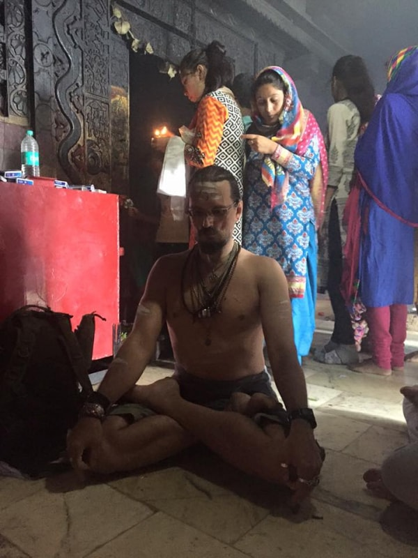
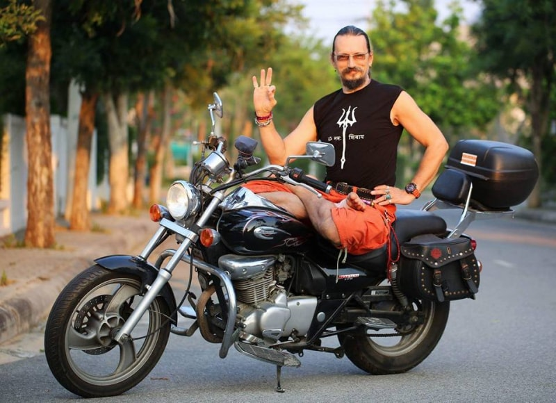
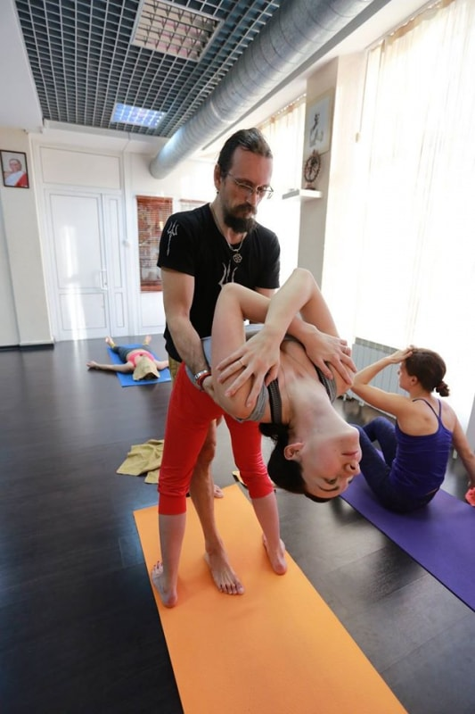
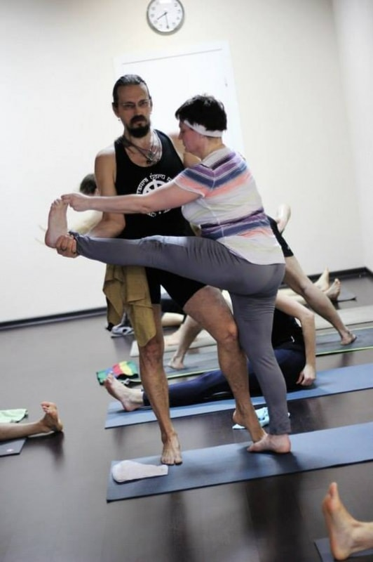

- Преподаватели
- Михаил Константинов
Михаил Константинов
Впервые познакомился с йогой в 1979 году, в рамках своего тогдашнего увлечения боевыми искусствами, благодаря первому Наставнику — Калинину Юрию Евгеньевичу. Прочел порядка трех десятков самиздатовских книг на эзотерические темы, по карате йоге,системам голодания, первые переводы книг К.Кастанеды, участвовал во многих подпольных семинарах и ритритах того времени (занятия йогой, карате и пр. были официально запрещены в СССР в 1982 году отдельным Постановлением Политбюро ЦК КПСС). Тогда же начал собирать библиотеку книг по йоге, которая на настоящий момент является одной из наиболее полных в России.
В 1989 году закончил Государственное медицинское училище N 18 и сдал экзамены по специальности «медицинская сестра», а чуть позже закончил Курсы по массажу при РГУФКе. В 1991 году закончил Курс по биоэнергетическим практикам Джуны Давиташвили, и тогда же получил сертификат по специальности «Боевые искусства» при РГУФКЕ.
Далее обучался йоге под руководством Джаякумара Свамишри в Культурном Центре им. Джавахарлала Неру при Посольстве Республики Индия в Москве.
С 1997 году начал заниматься в Московском Центре Йоги Айенгара, попутно принимая участие во всех значимых семинарах по йоге того времени: Андрея Сидерского, Андрея Лаппы, Кали Рей и многих других. Тогда же познакомился со стилем аштанга виньяса йоги Шри К. Паттабхи Джойса и выбрал это направление для своей регулярной практики.
В 1999 году принял участие, закончил и сдал экзамены в первом курсе для преподавателей Киевской Федерации Йоги под руководством ее Президента — Андрея Лаппы и при участии Андрея Сидерского и специалиста по реабилитации — доктора Николая Нечипорука.
С июня 1999 года начал преподавательскую деятельность в рамках новообразованного Центра Систем Интегрального Тренинга «Ритамбхара» на базе Гимназии 1517 города Москвы.
В сентябре 1999 года стал одним из основателей и ведущих преподавателей Московского Аштанга Йога Центра (www.yoga108.su).
В 2002 году прошел двухнедельный тренинг-интенсив по аштанга виньяса йоге, проводимый в Хельсинки (Финляндия) Президентом Европейского Союза Центров Аштанга Йоги Лино Миеле (Рим, Италия).
В 2003 году начал обучение в Институте исследования Аштанга Йоги в Майсоре, Индия (сейчас — Институт Аштанга Йоги Кришна Паттабхи Джойса — www.kpjayi.org), где продолжаю обучаться по настоящее время. В 2003 году организовал Курс для обучения преподавателей на базе Московского Аштанга Йога Центра, где и по сей день участвую в образовательном процессе в качестве ведущего преподавателя. Данный Курс выпустил в период 2003-2011 гг. более 250 сертифицированных преподавателей йоги, которые в настоящий момент работают в десятках фитнес центров, клубов и специализированных центрах йоги по всей России, а также на Украине, в Казахстане, Великобритании, Германии, Австралии, Канаде, Индии.
В 2003 году основал и стал Главным Редактором первого на русском языке специализированного журнала «ЙОГА», выпускавшегося в печатном виде с 2003 по 2008 год.
Участвовал в Первой Всеукраинской Конференции по йоге в 2003 году.
В 2004 году на базе АНО «Центр Систем Интегрального Тренинга Ритамбхара» основал издательство «Ритамбхара букс», в период с 2004 по 2009 выпустившее двенадцать книг по йогической тематике.
В 2005 году принял посвящение (дикшу) у Гуруджи Шри Шайлендры Шармы в Говардхане (Индия) в Традицию крийя йоги линии Лахири Махасая. Позже получил милостивое разрешение Гуруджи на перевод и выпуск его книг — комментариев к Йога сутрам, Шива сутрам, Бхагавадгите, а также сборника мыслей и афоризмов «Шипы и розы», которые и были изданы в 2005-2009 годах.
Участвовал в Первой Немецкой Конференции по йоге в Кельне в 2005 году, где познакомился с одним из ведущих преподавателей аштанга йоги в мире — Джоном Скоттом (Новая Зеландия), а также основателями дживамукти йоги — Дэвидом Лайфом и Шарон Гэннон (Нью-Йорк, США)
В 2007 году первым из россиян получил непосредственно у Гуруджи Шри К. Паттабхи Джойса авторизацию (право на преподавание) традиционной аштанга виньяса йоги. Тогда же основал специализированный сайт — www.ashtangayoga.ru, официально представляющий данное направление в России. Редактировал и выпустил книгу Лино Миеле «Аштанга Йога». В 2007 году совместно с Яной Макбрайд (Австралия) выпустил первый в России DVD, посвященный первой серии традиционной аштанга виньяса йоги.
В 2007 году совершил паломничество в Тибет (Китай), где совершил обряд парикрамы (ритуального обхода) священной для трех религий горы Кайлаш.
В 2007 году принял шиваизм, получив посвящение в Традицию вира-шиваизма из рук Шри 1008 Джагадгуру доктора Чандрашекхара Шивачарьи Махасвавмиджи в Джагамвадиматхе в Варанаси (Индия).
В период с 1997 по 2007 год участвовал в более чем сорока семинарах всех ведущих преподавателей СНГ и всего мира — Андрея Лаппы (украина), Андрея Сидерского (Украина), Сергея Сидорцова (украина), Александра Таишева (Украина), Кали Рей (США), Шандора Ремета (Австралия), Габриэллы Джубиляро (Италия), Фаека Бириа (Франция), Дэвида Лайфа и Шарон Гэннон (США), Брайана Кеста (США), Бал Мукунд Сингха (Индия), Доминика Кориглиано (США), Леонида Гарцентштейна (Молдова), Рейнхарда Гаментхаллера (Швейцария) и многих других. Спасибо им всем за опыт и обучение.
В период 1997 — 2010 гг. организовал и провел более десяти семинаров в Москве — Андрея Лаппы (Украина), Анатолия Зенченко (Украина), Татьяны Пивень (Украина), Леонида Гарценштейна (Молдова), Кали Рей (США), Бал Мукунд Сингха (Индия), Доминика Кориглиано и Сэйши Петерсон (США), Лино Миеле (Италия), Марка и Джоан Дерби (Канада).
Являлся главным организатором проведения и участником пяти Конференций журнала «ЙОГА» в Крыму, собиравших лучших мастеров йоги России и СНГ, а также приглашавших на свои мероприятия международных мастеров йоги и аюрведы — Анну Трёкис (Германия), Рейнхарда Гамментхаллера (Щвейцария), доктора Дэвида Фроули (США).
Организовал и регулярно проводит с 2007 года первый в России 50-часовой курс по введению в практику аштанга виньяса йоги Традиции Шри К.Паттабхи Джойса, построенный по международным стандартам. В рамках курса с традицией аштанга йоги познакомил более 200 человек.
Провел более 20 семинаров по йоге в Москве и Подмосковье, Санкт-Петербурге, Екатеринбурге, Нижнем Новгороде, Новосибирске, Воронеже, Киеве (Украина), Гоа (Индия), Египте, Вьетнаме, Тайланде.
В 2008 году инициировал создание Постсоветской Ассоциации Преподавателей Йоги — организации, направленной на систематизацию данных и информационного взаимообмена всех профессиональных преподавателей йоги признанных традиционных школ и стилей (www.psyta.ru и www.папи.рф).
Член Консультационного Совета Yoga Journal Russia (www.yogajournal.ru), постоянный участник конференций и презентаций журнала, автор публиковавшихся там статей, постоянный автор рубрики «Вопросы мастеру».
Презентер направления «аштанга виньяса йога» на Международной Конвенции World Class 2010 в Москве.
В июне-июле 2010 году был одним из организаторов первого пребывания в России своего Учителя — главы одной из крупнейших шиваистских школ Индии — Шри 1008 Джагадгуру Чандрашекхара Шивачарьи Махасвавмиджи. Тогда же основал сайт www.veerashaiva.ru, созданный для представления данной Традиции в русскоязычном пространстве.
В 2010 году стал одним из организаторов и ведущих преподавателей созданной на базе Московского Аштанга Йога Центра Ashtanga Yoga School Moscow (www.ashtanga.su) — первой в России специализированной школы традиционной аштанга виньяса йоги.
В 2011 году основал Ashtanga Kriya Yoga Reserch & Training Center в Хуа Хине, Тайланд, созданный для проведения различных мероприятий, семинаров и ритритов по углубленному изучению традиционных направлений йоги (www.kaivaliya.com).
Инициировал и явился главным организатором приезда и проведения в августе 2011 года первого семинара-интенсива современного Хранителя Традиции аштанга йоги — Р. Шарата Джойса в Москве.
В 2011 году на базе интернет йога портала «РИТАМБХАРА» создал он-лайн библиотеку книг, статей, обзоров, рецензий и текстов по йоге (www.ritambhara.org). В 2011 году основал авторскую школу интегрального тренинга — ритамбхара йога садхану (RYS), вобравшую в себя постулаты многих традиционных направлений работы с телом и сознанием (www.ritambhara.info)
- 
- 
- 
- 
Расписание семинаров
3 день
14:00 - 16:15